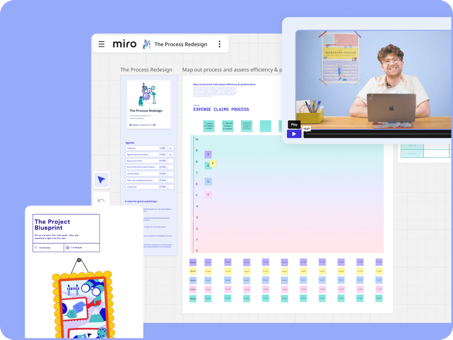
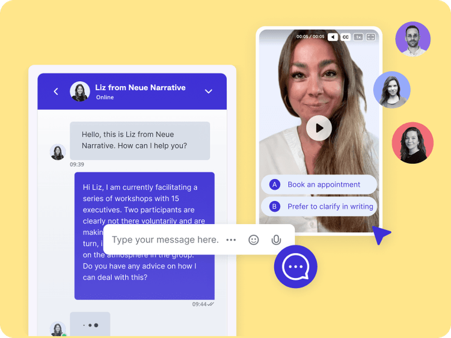
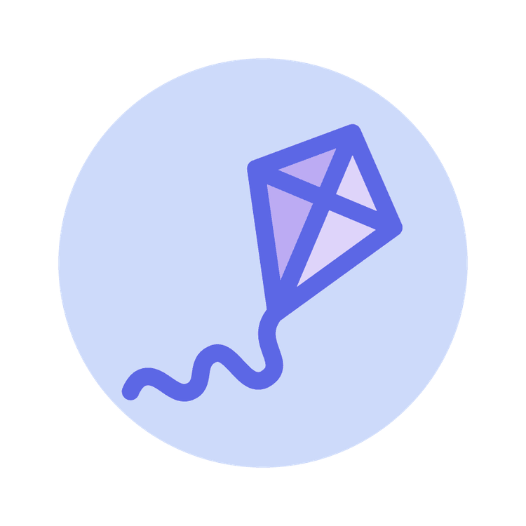
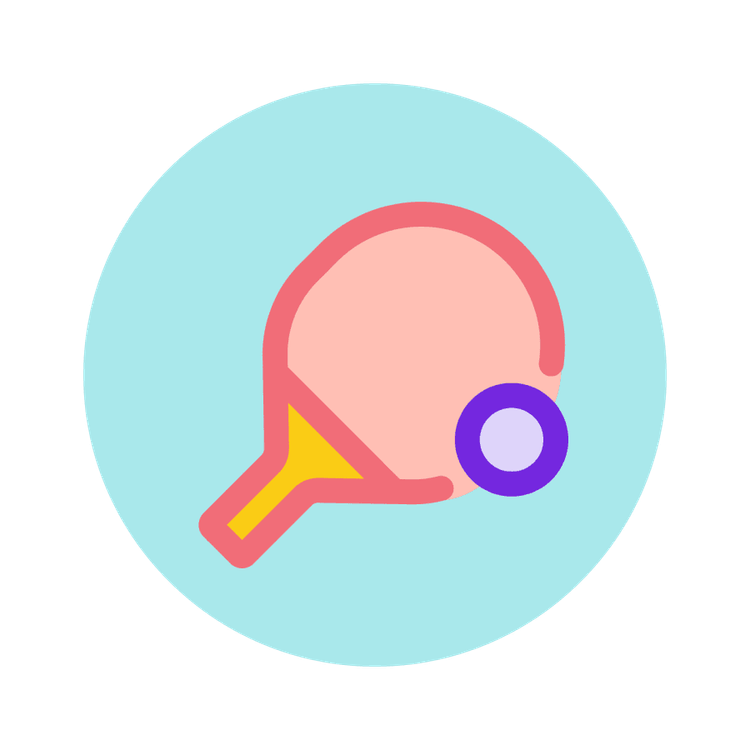
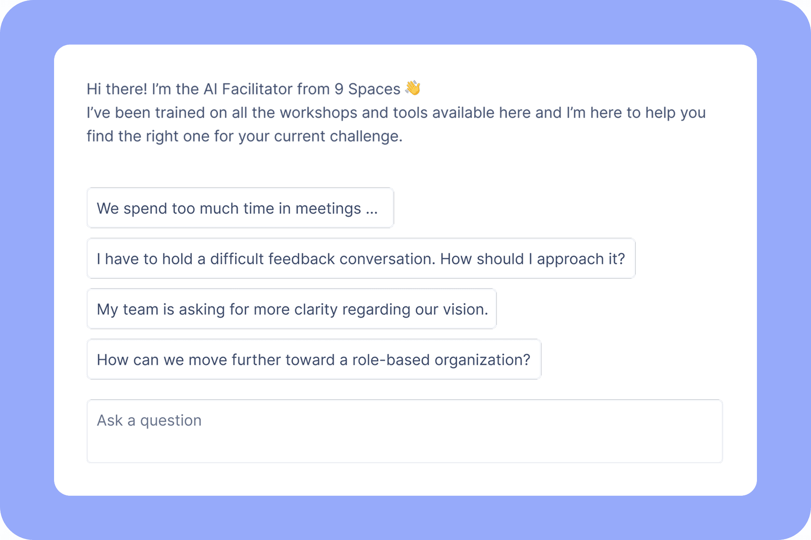

Business
5+ seats
Access for multiple team members within a tailored plan
9 Spaces is your steady partner in the day-to-day of leadership. Here you’ll find workshop formats and exercises that help you and your team keep developing.

This page is for decision-makers who want to strengthen their leadership skills and make real progress with their team.
Leadership is no magic. It’s a skill one can learn. On 9 Spaces you’ll find practical handouts, templates and guides that help you navigate everyday leadership. Start building your own leadership library.

Many leaders lack professional support. With our Business plan, you can chat with experienced consultants and work through organisational challenges together.


Leadership is the part of leading that defines a strong vision, translates it into goals and strategies, and inspires others. Today, this also means continually shaping and reshaping that vision while staying connected to the organisation’s inner and outer environment.

This is the operational dimension of leadership turning strategic direction into concrete processes and routines. It’s the day-to-day work of deciding what needs to happen, where improvements are necessary, and which pitfalls to watch for.

This is the part of leadership focused on helping people grow, learn continuously, and reach their full potential.
Divided into three modules, they help you grow as a leader, strengthen your team, and create an inspiring work culture.
Available soon in our Business and Enterprise plans.

Access for multiple team members within a tailored plan

Let’s talk about how your team or organisation can unlock the full potential of 9 Spaces with real examples from other organisations.